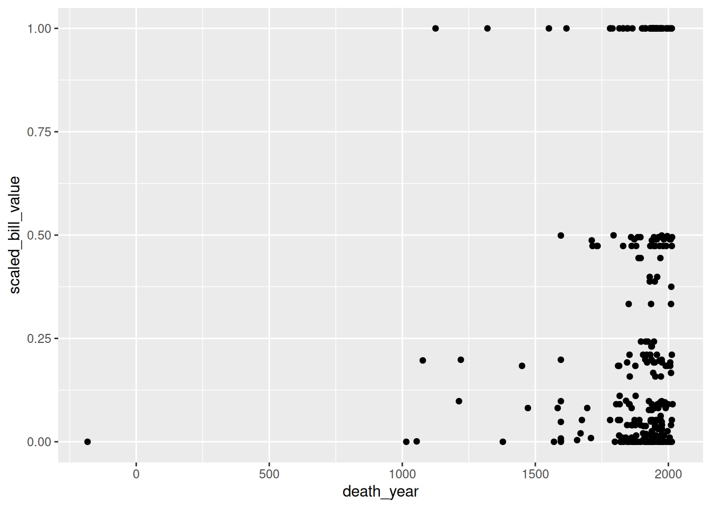
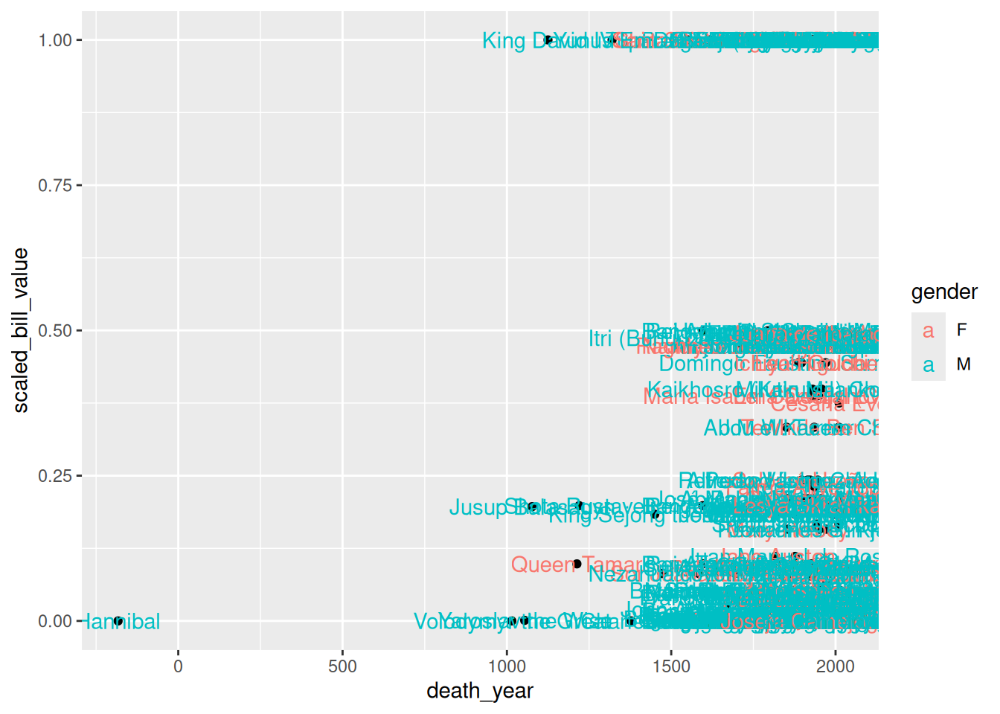
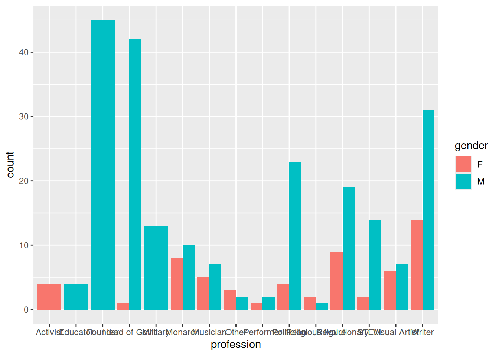

x = list(first = c(1, 2, 3), second = sin, third = c("hi", "hello"))
y = x[c(1, 3)]
y$first
[1] 1 2 3
$third
[1] "hi" "hello"class(y)[1] "list"After completing this chapter, learners should be able to:
[ versus [[sapply or lapplyNow that you have a solid foundation in the basic functions and data structures of R, you can move on to its most popular application: data analysis. In this chapter, you’ll learn how to efficiently explore and summarize data with visualizations and statistics. Along the way, you’ll also learn how to use apply functions, which are essential to fluency in R.
This section explains how to get and set data in a data frame, expanding on the indexing techniques you learned in Section 2.4. Under the hood, every data frame is a list, so first you’ll learn about indexing lists.
Lists are a container for other types of R objects. When you select an element from a list, you can either keep the container (the list) or discard it. The indexing operator [ almost always keeps containers.
As an example, let’s get some elements from a small list:
x = list(first = c(1, 2, 3), second = sin, third = c("hi", "hello"))
y = x[c(1, 3)]
y$first
[1] 1 2 3
$third
[1] "hi" "hello"class(y)[1] "list"The result is still a list. Even if we get just one element, the result of indexing a list with [ is a list:
class(x[1])[1] "list"Sometimes this will be exactly what we want. But what if we want to get the first element of x so that we can use it in a vectorized function? Or in a function that only accepts numeric arguments? We need to somehow get the element and discard the container.
The solution to this problem is the extraction operator [[, which is also called the double square bracket operator. The extraction operator is the primary way to get and set elements of lists and other containers.
Unlike the indexing operator [, the extraction operator always discards the container:
x[[1]][1] 1 2 3class(x[[1]])[1] "numeric"The tradeoff is that the extraction operator can only get or set one element at a time. Note that the element can be a vector, as above. Because it can only get or set one element at a time, the extraction operator can only index by position or name. Blank and logical indexes are not allowed.
The final difference between the index operator [ and the extraction operator [[ has to do with how they handle invalid indexes. The index operator [ returns NA for invalid vector elements, and NULL for invalid list elements:
c(1, 2)[10][1] NAx[10]$<NA>
NULLOn the other hand, the extraction operator [[ raises an error for invalid elements:
x[[10]]Error in x[[10]]: subscript out of boundsThe indexing operator [ and the extraction operator [[ both work with any data structure that has elements. However, you’ll generally use the indexing operator [ to index vectors, and the extraction operator [[ to index containers (such as lists).
For two-dimensional objects, like matrices and data frames, you can pass the indexing operator [ or the extraction operator [[ a separate index for each dimension. The rows come first:
DATA[ROWS, COLUMNS]For instance, let’s get the first 3 rows and all columns of the banknotes data:
banknotes[1:3, ] currency_code country currency_name name gender
1 ARS Argentina Argentinian Peso Eva Perón F
2 ARS Argentina Argentinian Peso Julio Argentino Roca M
3 ARS Argentina Argentinian Peso Domingo Faustino Sarmiento M
bill_count profession known_for_being_first current_bill_value
1 1 Activist No 100
2 1 Head of Gov't No 100
3 1 Head of Gov't No 50
prop_total_bills first_appearance_year death_year comments hover_text
1 NA 2012 1952
2 NA 1988 1914
3 NA 1999 1888
has_portrait id scaled_bill_value
1 true ARS_Evita 1.0000000
2 true ARS_Argentino 1.0000000
3 true ARS_Domingo 0.4444444As we saw in Section 2.4.1, leaving an index blank means all elements.
As another example, let’s get the 3rd and 5th row, and the 2nd and 4th column:
banknotes[c(3, 5), c(2, 4)] country name
3 Argentina Domingo Faustino Sarmiento
5 Argentina Manuel BelgranoMixing several different ways of indexing is allowed. So for example, we can get the same above, but use column names instead of positions:
banknotes[c(3, 5), c("currency_name", "name")] currency_name name
3 Argentinian Peso Domingo Faustino Sarmiento
5 Argentinian Peso Manuel BelgranoFor data frames, it’s especially common to index the rows by condition and the columns by name. For instance, let’s get the name and profession columns for all women in the banknotes data set:
result = banknotes[banknotes$gender == "F", c("name", "profession")]
head(result) name profession
1 Eva Perón Activist
7 Mary Gilmore Writer
10 Edith Cowan Politician
11 Nellie Melba Musician
13 Mary Reibey Other
14 Queen Elizabeth II MonarchAlso see Section 5.2 for a case where the [ operator behaves in a surprising way.
A package is a collection of functions for use in R. Packages usually include documentation, and can also contain examples, vignettes, and data sets. Most packages are developed by members of the R community, so quality varies. There are also a few packages that are built into R but provide extra features. We’ll use a package in Section 3.3, so we’re learning about them now.
The Comprehensive R Archive Network, or CRAN, is the main place people publish packages. As of writing, there were 18,619 packages posted to CRAN. This number has been steadily increasing as R has grown in popularity.
Packages span a wide variety of topics and disciplines. There are packages related to statistics, social sciences, geography, genetics, physics, biology, pharmacology, economics, agriculture, and more. The best way to find packages is to search online, but the CRAN website also provides “task views” if you want to browse popular packages related to a specific discipline.
The install.packages function installs one or more packages from CRAN. Its first argument is the packages to install, as a character vector.
When you run install.packages, R will ask you to choose which mirror to download the package from. A mirror is a web server that has the same set of files as some other server. Mirrors are used to make downloads faster and to provide redundancy so that if a server stops working, files are still available somewhere else. CRAN has dozens of mirrors; you should choose one that’s geographically nearby, since that usually produces the best download speeds. If you aren’t sure which mirror to choose, you can use the 0-Cloud mirror, which attempts to automatically choose a mirror near you.
As an example, here’s the code to install the remotes package:
install.packages("remotes")If you run the code above, you’ll be asked to select a mirror, and then see output that looks something like this:
--- Please select a CRAN mirror for use in this session ---
trying URL 'https://cloud.r-project.org/src/contrib/remotes_2.3.0.tar.gz'
Content type 'application/x-gzip' length 148405 bytes (144 KB)
==================================================
downloaded 144 KB
* installing *source* package ‘remotes’ ...
** package ‘remotes’ successfully unpacked and MD5 sums checked
** using staged installation
** R
** inst
** byte-compile and prepare package for lazy loading
** help
*** installing help indices
** building package indices
** installing vignettes
** testing if installed package can be loaded from temporary location
** testing if installed package can be loaded from final location
** testing if installed package keeps a record of temporary installation path
* DONE (remotes)
The downloaded source packages are in
‘/tmp/Rtmp8t6iGa/downloaded_packages’R goes through a variety of steps to install a package, even installing other packages that the package depends on. You can tell that a package installation succeeded by the final line DONE. When a package installation fails, R prints an error message explaining the problem instead.
Once a package is installed, it stays on your computer until you remove it or remove R. This means you only need to install each package once. However, most packages are periodically updated. You can reinstall a package using install.packages the same way as above to get the latest version.
Alternatively, you can update all of the R packages you have installed at once by calling the update.packages function. Beware that this may take a long time if you have a lot of packages installed.
The function to remove packages is remove.packages. Like install.packages, this function’s first argument is the packages to remove, as a character vector.
If you want to see which packages are installed, you can use the installed.packages function. It does not require any arguments. It returns a matrix with one row for each package and columns that contain a variety of information. Here’s an example:
packages = installed.packages()
# Just print the version numbers for 10 packages.
packages[1:10, "Version"] abind ape askpass assertthat backports base64enc BH
"1.4-5" "5.8" "1.2.0" "0.2.1" "1.4.1" "0.1-3" "1.84.0-0"
bit bit64 bitops
"4.0.5" "4.0.5" "1.0-7" You’ll see a different set of packages, since you have a different computer.
Before you can use the functions (or other resources) in an installed package, you must load the package with the library function. R doesn’t load packages automatically because each package you load uses memory and may conflict with other packages. Thus you should only load the packages you need for whatever it is that you want to do. When you restart R, the loaded packages are cleared and you must again load any packages you want to use.
Let’s load the remotes package we installed earlier:
library("remotes")The library function works with or without quotes around the package name, so you may also see people write things like library(remotes). We recommend using quotes to make it unambiguous that you are not referring to a variable.
A handful of packages print out a message when loaded, but the vast majority do not. Thus you can assume the call to library was successful if nothing is printed. If something goes wrong while loading a package, R will print out an error message explaining the problem.
Finally, not all R packages are published to CRAN. GitHub is another popular place to publish R packages, especially ones that are experimental or still in development. Unlike CRAN, GitHub is a general-purpose website for publishing code written in any programming language, so it contains much more than just R packages and is not specifically R-focused.
The remotes package that we just installed and loaded provides functions to install packages from GitHub. It is generally better to install packages from CRAN when they are available there, since the versions on CRAN tend to be more stable and intended for a wide audience. However, if you want to install a package from GitHub, you can learn more about the remotes package by reading its online documentation.
There are three popular systems for creating visualizations in R:
plot function)These three systems are not interoperable! Consequently, it’s best to choose one to use exclusively. Compared to base R, both lattice and ggplot2 are better at handling grouped data and generally require less code to create a nice-looking visualization.
The ggplot2 package is so popular that there are now knockoff packages for other data-science-oriented programming languages like Python and Julia. The package is also part of the Tidyverse, a popular collection of R packages designed to work well together. Because of these advantages, we’ll use ggplot2 for visualizations in this and all future lessons.
ggplot2 has detailed documentation and also a cheatsheet.
The “gg” in ggplot2 stands for grammar of graphics. The idea of a grammar of graphics is that visualizations can be built up in layers. In ggplot2, the three layers every plot must have are:
There are also several optional layers. Here are a few:
| Layer | Description |
|---|---|
| scales | Title, label, and axis value settings |
| facets | Side-by-side plots |
| guides | Axis and legend position settings |
| annotations | Shapes that are not mapped to data |
| coordinates | Coordinate systems (Cartesian, logarithmic, polar) |
As an example, let’s plot the banknotes data. First, we need to load ggplot2. As always, if this is your first time using the package, you’ll have to install it. Then you can load the package:
# install.packages("ggplot2")
library("ggplot2")What kind of plot should we make? It depends on what we want to know about the data set. Suppose we want to understand the relationship between a banknote’s value and how long ago the person on the banknote died, as well as whether this is affected by gender. One way to show this is to make a scatter plot.
Before plotting, we need to make sure that the death_year column is numeric:
is_blank = banknotes$death_year %in% c("", "-")
banknotes$death_year[is_blank] = NA
banknotes$death_year = as.numeric(banknotes$death_year)Now we’re ready to make the plot.
The data layer determines the data set used to make the plot. ggplot and most other Tidyverse packages are designed for working with tidy data frames. Tidy means:
Tidy data sets are convenient in general. A later lesson will cover how to make an untidy data set tidy. Until then, we’ll take it for granted that the data sets we work with are tidy.
To set up the data layer, call the ggplot function on a data frame:
ggplot(banknotes)
This returns a blank plot. We still need to add a few more layers.
The geometry layer determines the shape or appearance of the visual elements of the plot. In other words, the geometry layer determines what kind of plot to make: one with points, lines, boxes, or something else.
There are many different geometries available in ggplot2. The package provides a function for each geometry, always prefixed with geom_.
To add a geometry layer to the plot, choose the geom_ function you want and add it to the plot with the + operator:
ggplot(banknotes) + geom_point()Error in `geom_point()`:
! Problem while setting up geom.
ℹ Error occurred in the 1st layer.
Caused by error in `compute_geom_1()`:
! `geom_point()` requires the following missing aesthetics: x and y.This returns an error message that we’re missing aesthetics x and y. We’ll learn more about aesthetics in the next section, but this error message is especially helpful: it tells us exactly what we’re missing. When you use a geometry you’re unfamiliar with, it can be helpful to run the code for just the data and geometry layer like this, to see exactly which aesthetics need to be set.
As we’ll see later, it’s possible to add multiple geometries to a plot.
The aesthetic layer determines the relationship between the data and the geometry. Use the aesthetic layer to map features in the data to aesthetics (visual elements) of the geometry.
The aes function creates an aesthetic layer. The syntax is:
aes(AESTHETIC = FEATURE, ...)The names of the aesthetics depend on the geometry, but some common ones are x, y, color, fill, shape, and size. There is more information about and examples of aesthetic names in the documentation.
For example, we want to put death_year on the x-axis and scaled_bill_value on the y-axis. It’s best to use scaled_bill_value here rather than current_bill_value because the different countries use different scales of currency. For example, 1 United States Dollar is worth approximately 100 Japanese Yen. So the aesthetic layer should be:
ggplot(banknotes) +
geom_point() +
aes(x = death_year, y = scaled_bill_value)Warning: Removed 9 rows containing missing values or values outside the scale range
(`geom_point()`).
In the aes function, column names are never quoted. In older versions of ggplot2, you must pass the aesthetic layer as the second argument of the ggplot function rather than using + to add it to the plot. This syntax is still widely used:
ggplot(banknotes, aes(x = death_year, y = scaled_bill_value)) +
geom_point()Warning: Removed 9 rows containing missing values or values outside the scale range
(`geom_point()`).
When you add the aesthetic layer or pass it to the ggplot function, it applies to the entire plot. You can also set an aesthetic layer individually for each geometry, by passing the layer as the first argument in the geom_ function:
ggplot(banknotes) +
geom_point(aes(x = death_year, y = scaled_bill_value))Warning: Removed 9 rows containing missing values or values outside the scale range
(`geom_point()`).
This is really only useful when you have multiple geometries. As an example, let’s color-code the points by gender:
ggplot(banknotes) +
geom_point(aes(x = death_year, y = scaled_bill_value, color = gender))Warning: Removed 9 rows containing missing values or values outside the scale range
(`geom_point()`).
Now let’s also add labels to each point. To do this, we need to add another geometry:
ggplot(banknotes) +
geom_point() +
aes(x = death_year, y = scaled_bill_value, color = gender, label = name) +
geom_text()Warning: Removed 9 rows containing missing values or values outside the scale range
(`geom_point()`).Warning: Removed 9 rows containing missing values or values outside the scale range
(`geom_text()`).
Where we put the aesthetics matters:
ggplot(banknotes) +
geom_point() +
aes(x = death_year, y = scaled_bill_value, label = name) +
geom_text(aes(color = gender))Warning: Removed 9 rows containing missing values or values outside the scale range
(`geom_point()`).Warning: Removed 9 rows containing missing values or values outside the scale range
(`geom_text()`).
If you want to set an aesthetic to a constant value, rather than one that’s data dependent, do so in the geometry layer rather than the aesthetic layer. For instance, suppose use point shape rather than color to indicate gender, and we want to make all of the points blue:
ggplot(banknotes) +
geom_point(color = "blue") +
aes(x = death_year, y = scaled_bill_value, shape = gender)Warning: Removed 9 rows containing missing values or values outside the scale range
(`geom_point()`).
If you set an aesthetic to a constant value inside of the aesthetic layer, the results you get might not be what you expect:
ggplot(banknotes) +
geom_point() +
aes(x = death_year, y = scaled_bill_value, shape = gender, color = "blue")Warning: Removed 9 rows containing missing values or values outside the scale range
(`geom_point()`).
The scales layer controls the title, axis labels, and axis scales of the plot. Most of the functions in the scales layer are prefixed with scale_, but not all of them.
The labs function is especially important, because it’s used to set the title and axis labels:
ggplot(banknotes) +
geom_point() +
aes(x = death_year, y = scaled_bill_value, shape = gender) +
labs(x = "Death Year", y = "Scaled Bill Value",
title = "Does death year affect bill value?", shape = "Gender")Warning: Removed 9 rows containing missing values or values outside the scale range
(`geom_point()`).
In ggplot2, use the ggsave function to save the most recent plot you created:
ggsave("banknote_scatter.png")The file format is selected automatically based on the extension. Common formats are PNG and PDF.
You can also save a plot with one of R’s “plot device” functions. The steps are:
png, jpeg, pdf, bmp, tiff, or svg.dev.off to indicate that you’re done plotting.This strategy works with any of R’s graphics systems (not just ggplot2).
Here’s an example:
# Run these lines in the console, not the notebook!
jpeg("banknote_scatter.jpeg")
ggplot(banknotes) +
geom_point() +
aes(x = death_year, y = scaled_bill_value, shape = gender) +
labs(x = "Death Year", y = "Scaled Bill Value",
title = "Does death year affect bill value?", shape = "Gender")
dev.off()Now suppose you want to plot the number of banknotes with people from each profession in the banknotes data set. A bar plot is in an appropriate way to represent this visually.
The geometry for a bar plot is geom_bar. Since bar plots are mainly used to display frequencies, the geom_bar function automatically computes frequencies when given mapped to a categorical feature.
We can also use a fill color to further breakdown the bars by gender. Here’s the code to make the bar plot:
ggplot(banknotes) +
aes(x = profession, fill = gender) +
geom_bar(position = "dodge")
The setting position = "dodge" instructs geom_bar to put the bars side-by-side rather than stacking them.
In some cases, you may want to make a bar plot with frequencies you’ve already computed. To prevent geom_bar from computing frequencies automatically, set stat = "identity".
Designing high-quality visualizations goes beyond just mastering which R functions to call. You also need to think carefully about what kind of data you have and what message you want to convey. This section provides a few guidelines.
The first step in data visualization is choosing an appropriate kind of plot. Here are some suggestions (not rules):
| Feature 1 | Feature 2 | Plot |
|---|---|---|
| categorical | bar, dot | |
| categorical | categorical | bar, dot, mosaic |
| numerical | box, density, histogram | |
| numerical | categorical | box, density, ridge |
| numerical | numerical | line, scatter, smooth scatter |
If you want to add a:
Once you’ve selected a plot, here are some rules you should almost always follow:
Always add a title and axis labels. These should be in plain English, not variable names!
Specify units after the axis label if the axis has units. For instance, “Height (ft)”.
Don’t forget that many people are colorblind! Also, plots are often printed in black and white. Use point and line styles to distinguish groups; color is optional.
Add a legend whenever you’ve used more than one point or line style.
Always write a few sentences explaining what the plot reveals. Don’t describe the plot, because the reader can just look at it. Instead, explain what they can learn from the plot and point out important details that are easily overlooked.
Sometimes points get plotted on top of each other. This is called overplotting. Plots with a lot of overplotting can be hard to read and can even misrepresent the data by hiding how many points are present. Use a two-dimensional density plot or jitter the points to deal with overplotting.
For side-by-side plots, use the same axis scales for both plots so that comparing them is not deceptive.
Visualization design is a deep topic, and whole books have been written about it. One resource where you can learn more is DataLab’s Principles of Data Visualization Workshop Reader.
Section 2.1.3 introduced vectorization, a convenient and efficient way to compute multiple results. That section also mentioned that some of R’s functions—the ones that summarize or aggregate data—are not vectorized.
The class function is an example of a function that’s not vectorized. If we call the class function on the banknotes data set, we get just one result for the data set as a whole:
class(banknotes)[1] "data.frame"What if we want to get the class of each column? We can get the class for a single column by selecting the column with $, the dollar sign operator:
class(banknotes$currency_code)[1] "character"But what if we want the classes for all the columns? We could write a call to class for each column, but that would be tedious. When you’re working with a programming language, you should try to avoid tedium; there’s usually a better, more automated way.
Section 2.2.1 pointed out that data frames are technically lists, where each column is one element. With that in mind, what we need here is a line of code that calls class on each element of the data frame. The idea is similar to vectorization, but since we have a list and a non-vectorized function, we have to do a bit more than just call class(banknotes).
The lapply function calls, or applies, a function on each element of a list or vector. The syntax is:
lapply(X, FUN, ...)The function FUN is called once for each element of X, with the element as the first argument. The ... is for additional arguments to FUN, which are held constant across all the elements.
Let’s try this out with the banknotes data and the class function:
lapply(banknotes, class)$currency_code
[1] "character"
$country
[1] "character"
$currency_name
[1] "character"
$name
[1] "character"
$gender
[1] "character"
$bill_count
[1] "numeric"
$profession
[1] "character"
$known_for_being_first
[1] "character"
$current_bill_value
[1] "integer"
$prop_total_bills
[1] "numeric"
$first_appearance_year
[1] "integer"
$death_year
[1] "numeric"
$comments
[1] "character"
$hover_text
[1] "character"
$has_portrait
[1] "character"
$id
[1] "character"
$scaled_bill_value
[1] "numeric"The result is similar to if the class function was vectorized. In fact, if we use a vector and a vectorized function with lapply, the result is nearly identical to the result from vectorization:
x = c(1, 2, pi)
sin(x)[1] 8.414710e-01 9.092974e-01 1.224647e-16lapply(x, sin)[[1]]
[1] 0.841471
[[2]]
[1] 0.9092974
[[3]]
[1] 1.224647e-16The only difference is that the result from lapply is a list. In fact, the lapply function always returns a list with one element for each element of the input data. The “l” in lapply stands for “list”.
The lapply function is one member of a family of functions called apply functions. All of the apply functions provide ways to apply a function repeatedly to different parts of a data structure. We’ll meet a few more apply functions soon.
When you have a choice between using vectorization or an apply function, you should always choose vectorization. Vectorization is clearer—compare the two lines of code above—and it’s also significantly more efficient. In fact, vectorization is the most efficient way to call a function repeatedly in R.
As we saw with the class function, there are some situations where vectorization is not possible. That’s when you should think about using an apply function.
sapply FunctionThe related sapply function calls a function on each element of a list or vector, and simplifies the result. That last part is the crucial difference compared to lapply. When results from the calls all have the same type and length, sapply returns a vector or matrix instead of a list. When the results have different types or lengths, the result is the same as for lapply. The “s” in sapply stands for “simplify”.
For instance, if we use sapply to find the classes of the columns in the banknotes data, we get a character vector:
sapply(banknotes, class) currency_code country currency_name
"character" "character" "character"
name gender bill_count
"character" "character" "numeric"
profession known_for_being_first current_bill_value
"character" "character" "integer"
prop_total_bills first_appearance_year death_year
"numeric" "integer" "numeric"
comments hover_text has_portrait
"character" "character" "character"
id scaled_bill_value
"character" "numeric" Likewise, if we use sapply to compute the sin values, we get a numeric vector, the same as from vectorization:
sapply(x, sin)[1] 8.414710e-01 9.092974e-01 1.224647e-16In spite of that, vectorization is still more efficient than sapply, so use vectorization instead when possible.
Apply functions are incredibly useful for summarizing data. For example, suppose we want to compute the frequencies for all of the columns in the banknotes data set that aren’t numeric.
First, we need to identify the columns. One way to do this is with the is.numeric function. Despite the name, this function actually tests whether its argument is a real number, not whether it its argument is a numeric vector. In other words, it also returns true for integer values. We can use sapply to apply this function to all of the columns in the banknotes data set:
is_not_number = !sapply(banknotes, is.numeric)
is_not_number currency_code country currency_name
TRUE TRUE TRUE
name gender bill_count
TRUE TRUE FALSE
profession known_for_being_first current_bill_value
TRUE TRUE FALSE
prop_total_bills first_appearance_year death_year
FALSE FALSE FALSE
comments hover_text has_portrait
TRUE TRUE TRUE
id scaled_bill_value
TRUE FALSE Is it worth using R code to identify the non-numeric columns? Since there are only 17 columns in the banknotes data set, maybe not. But if the data set was larger, with say 100 columns, it definitely would be.
In general, it’s a good habit to use R to do things rather than do them manually. You’ll get more practice programming, and your code will be more flexible if you want to adapt it to other data sets.
Now that we know which columns are non-numeric, we can use the table function to compute frequencies. We only want to compute frequencies for those columns, so we need to subset the data:
lapply(banknotes[, is_not_number], table)$currency_code
ARS AUD BDT BOB CAD CLP COP CRC CVE CZK DOP GBP GEL IDR ILS ISK JMD JPY KGS KRW
5 9 9 15 9 5 11 6 5 6 11 8 9 12 4 5 5 3 7 4
MWK MXN NGN NZD PEN PGK PHP RMB RSD SEK STD TND TRY UAH USD UYU VES VES ZAR
7 11 9 5 7 1 9 6 9 6 8 4 12 10 7 7 2 6 5
$country
Argentina Australia Bangladesh
5 9 9
Bolivia Canada Cape Verde
15 9 5
Chile China Colombia
5 6 11
Costa Rica Czech Republic Dominican Republic
6 6 11
England Georgia Iceland
8 9 5
Indonesia Israel Jamaica
12 4 5
Japan Kyrgyzstan Malawi
3 7 7
Mexico New Zealand Nigeria
11 5 9
Papua New Guinea Peru Philippines
1 7 9
São Tomé and Príncipe Serbia South Africa
8 9 5
South Korea Sweden Tunisia
4 6 4
Turkey Ukraine United States
12 10 7
Uruguay Venezuela
7 8
$currency_name
Argentinian Peso Australian Dollar Boliviano Canadian Dollar
5 9 15 9
Chilean Peso Colombian Peso Colón Czech koruna
5 11 6 6
dobra Escudo hryvna Jamaican dollar
8 5 10 5
kina Króna Kwacha lari
1 5 7 9
Lira naira New Zealand dollar Peso dominicano
12 9 5 11
Peso mexicano Peso uruguayo piso pound
11 7 9 8
rand Renminbi rupiah Serbian dinar
5 6 12 9
shekel Sol Som Swedish krona
4 7 7 6
Taka Tunisian dinar US dollar Venezuelan bolivar
9 4 7 8
Won Yen
4 3
$name
Abou el Kacem Chebbi Abraham Lincoln
1 1
Abraham Valdelomar Pinto Agnes Macphail
1 1
Akaki Tsereteli Alan Turing
1 1
Alejo Calatayud Alexander Hamilton
1 1
Alfonso López Michelsen Alfredo González Flores
1 1
Alfredo Vásquez Acevedo Alhaji Aliyu Mai-Bornu
1 1
Alhaji Sir Abubarkar Tafawa Balewa Alhaji Sir Ahmadu Bello
1 1
Alykul Osmonov Andrés Bello
1 1
Andrew Jackson Antonio José de Sucre
1 2
Apiaguaiki Tüpa Apirana Ngata
1 1
Aristides Maria Pereira Arturo Prat Chacón
1 1
Astrid Lindgren Aydın Sayılı
1 1
Bangabandhu Sheikh Mujibur Rahman Banjo Paterson
9 1
Bartolina Sisa Benigno S. Aquino, Jr.
1 1
Benito Juárez Benjamin Franklin
2 1
Birgit Nilsson Bogdan Khmelnitsky
1 1
Božena Němcová Braulio Carrillo Colina
1 1
Bruno Racua Brynjólfur Sveinsson
1 1
Cahit Arf Carlos Lleras Restrepo
1 1
Carmen Serdán Cesária Évora
1 1
Charles IV Chief Obafemi Awolowo
1 1
Codé Di Dona Corazon C. Aquino
1 1
Dag Hammarskiöld Dámaso Antonio Larrañaga
1 1
David Unaipon Debora Arango
1 1
Diego Rivera Diosdado P. Macapagal
1 1
Djuanda Kartawidjaja Domingo Faustino Sarmiento
1 1
Dorde Vajfert Dr. Alvan Ikoku
1 1
Dr. Clement Isong Dr. Hastings Kamuzu Banda
1 1
Dr. Nnamdi Azikiwe Edith Cowan
1 1
Edmund Hillary Eduardo Fabini
1 1
Ema Destinnová Emilio Prud'Homme
1 1
Eustaquio Méndez Eva Perón
1 1
Evert Taube Ezequiel Zamora
1 1
Farhat Hached Fatma Aliye Topuz
1 1
Francisco de Miranda Francisco de Paula Santander
1 1
Francisco del Rosario Sánchez Francisco I. Madero
1 1
Francisco José Tenreiro Frans Kaisiepo
1 1
František Palacký Frida Kahlo
1 1
Gabriel García Márquez Gabriela Mistral
1 1
General Murtala Mohammed Genoveva Ríos
1 1
George Washington Gregorio Luperon
1 1
Greta Garbo GSSJ Ratulangi
1 1
Gusti Ngurah Rai Hannibal
1 1
Henrique Teixeira de Sousa Hermila Galindo
1 1
Hideyo Noguchi Hryhoriy Skovoroda
1 1
Hugh Lawson Shearer Ichiyo Higuchi
1 1
Idham Chalid Ignacio Carrera Pinto
1 1
Ilia Chavchavadze Ingmar Bergman
1 1
Inkosi ya Makhosi M'mbelwa II Inkosi Ya Mokhosi Gomani II
1 1
Itri (Buhurizade Mustafa Efendi) Ivan Franko
1 1
Ivan Mazepa Ivane Javakhishvili
1 1
J.M.W. Turner James Federick Sangala
1 1
James Gladstone (Akay-na-muka) Jane Austen
1 1
Jóhannes S. Kjarval John A. Macdonald
1 1
John Amos Comenius Jón Sigurdsson
1 1
Jónas Hallgrímsson Jorge Barbosa
1 1
Jorge Basadre Grohmann Jorge Eliécer Gaitán
1 1
Jorge Isaacs José Abad Santos
1 1
José Abelardo Quiñones Gonzales José Asunción Silva
1 1
José Félix Ribas José Figueres
1 1
José Manuel Baca "Cañoto" José María Morelos
1 1
José Pedro Varela José Rufino Reyes y Siancas
1 1
José Santos Vargas Josefa Camejo
1 1
Josefa Llanes Escoda Jovan Cvijic
1 1
Juan Manuel de Rosas Juan Pablo Duarte
1 1
Juan Zorrilla de San Martín Juana Azurduy de Padilla
1 1
Juana de Ibarbourou Julio Argentino Roca
1 1
Julio Garavito Armero Jusup Balasagyn
1 1
Kaikhosro (Kakutsa) Cholokashvili Kate Sheppard
1 1
Kemal Atatürk Kemaleddin
6 1
King David IV King Sejong the Great
1 1
Kurmanjan Datka Ladi Kwali
1 1
Leah Goldberg Lesya Ukrainka
1 1
Manuel A. Roxas Manuel Belgrano
1 1
Manuel L. Quezon Manuel Rodríguez Erdoyza
1 1
Mao Zedong María Isabel Carvajal (Carmen Lyra)
6 1
María Isabel Granda y Larco María Teresa Mirabal
1 1
Mary Gilmore Mary Reibey
1 1
Matías Ramón Mella Mauro Fernández Acuña
1 1
Michael Norman Manley Michael Somare
1 1
Miguel Hidalgo Milutin Milanković
1 1
Minerva Mirabal Mohammad Hatta
1 1
Mohammad Husni Thamrin Mykhailo Hrusheskyi
1 1
Nadežda Petrović Nanny of the Maroons
1 1
Nathan Alterman Nellie Melba
1 1
Nelson Mandela Nezahualcóyotl
5 1
Niko Pirosmanashvili Nikola Tesla
1 1
Oto Iskander Di Nata Pablo Zárate Willka
1 1
Patria Mirabal Pedro Figari
1 1
Pedro Henriquez Ureña Pedro Ignacio Muiba
1 1
Pedro Paulet Petar Petrovic Njegoš
1 1
Policarpa Salavarrieta Prince Antasari
1 1
Queen Elizabeth II Queen Tamar
7 1
Rachel Bluwstein Rafael Urdaneta
1 1
Ragnheiður Jónsdóttir Raúl Porras Barrenechea
1 1
Rei Amador Reverend John Chilembwe
7 2
Reverend John Flynn Ricardo Jiménez Oreamuno
1 1
Rose Lomathinda Chibambo Rutherford of Nelson
1 1
Salomé Ureña Samuel Sharpe
1 1
Santa Rosa de Lima Sayakbay Karalaev
1 1
Sergio Osmeña Shaul Tchernichovsky
1 1
Shin Saimdang Shota Rustaveli
1 1
Simón Bolívar Simón Rodrigues
2 1
Sir Donald Sangster Sir George-Étienne Cartier
1 1
Sir John Monash Sir Robert Borden
1 1
Sir Wilfrid Laurier Slobodan Jovanovic
1 1
Soekarno Sor Juana Inés de la Cruz
1 1
Stevan Stevanovic Mokranjac Sultan Mahmud Badaruddin II
1 1
Suymonkul Chokmorov Taras Shevchenko
1 1
Tewhida Ben Sheikh Thomas Jefferson
1 1
Tjut Meutia Togolok Moldo
1 1
Toktogul Satylganov Tomáš Garrigue Masaryk
1 1
Tomás Katari Tupac Katari (Julian Apasa Nina)
1 1
Ulysses S. Grant Vicente Lim
1 1
Viola Desmond Virginia Gutiérrez
1 1
Volodymyr the Great Volodymyr Vernadskyi
1 1
Vuk Stefanovic Karadžic William Lyon Mackenzie King
1 1
Winston Churchill Yaroslav the Wise
1 1
Yi Hwang Yi I
1 1
Yukichi Fukuzawa Yunus Emre
1 1
Zakaria Paliashvili
1
$gender
F M
59 220
$profession
Activist Educator Founder Head of Gov't
4 4 45 43
Military Monarch Musician Other
13 18 12 5
Performer Politician Religious figure Revolutionary
3 27 3 28
STEM Visual Artist Writer
16 13 45
$known_for_being_first
No Yes
185 94
$comments
160
1st "hetman of ukraine", also military leader
1
1st author of detective novels and modern poetry in Ukrainian
1
1st black state leader and 1st president of South Africa
5
1st Chairman of the People's Republic of China (1954–1959)
1
1st christian prince of Kiev
1
1st climber to summit Mt Everest. explorer
1
1st female minister in the independent Malawi government
1
1st Filipino graduate of the US Military Academy West Point
1
1st Filipino head of gov't over the entire Philipines
1
1st french-canadian prime minister of canada
1
1st indigeneous Governer of the Bank
1
1st Indonesian president
1
1st Indonesian vice-president
1
1st Maori to graduate from a New Zealand university
1
1st Mexican to have their art featured in the Louvre
1
1st Premier of Northern Nigeria
1
1st President and 1st Prime Minister of Malawi
1
1st president of Bolivia
1
1st president of Federal Republic of Nigeria
1
1st president of independent Philipines
1
1st president of indigenous origin. also on the 20 pesos bill from Series F
2
1st president of USA
1
1st prime minister after independence
1
1st prime minister of canada
1
1st prime minister of independent Nigeria
1
1st secretary of the treasury
1
1st US secretary of state
1
1st Visayan person to be president. 1st speaker of the House of Representatives
1
Alleged first person to build a liquid-propellant rocket engine and modern rocket propulsion system
1
also an author, president of Central Rada (Soviet) and national activist
1
also known for being politicaly active, but not holding elected office
1
also known for his poetry
1
also on the 50 pesos bill from Series F
1
Came up with the first Argentine flag.
1
Canada's first labor minister
1
cannot find info about this person
1
Composed music for the national anthem
1
Composer. was part of Serbia's first string quartet
1
considered 1st national hero
1
elected "Hetman of Zaporizhian Host" . also served as military leader
1
elected the first civilian Governor of Cross River State from 1979 to 1983
1
entitled Datka (meaning "Righteous Ruler") of her people. also ran away from her first husband, which is rare
1
First catholic saint of the Americas
1
First Colombian to win a Nobel Prize for Literature
1
First female Muslim novelist
1
First female president in Phillipines
1
First King of Bohemia to become Holy Roman Emperor
1
first modern tunisian woman to become a physician
1
First president of Cape Verde
1
First president of Colombia and Bolivia
1
First president of Czechoslovakia
1
First president of the Republic of New Granada (present-day Colombia)
1
First rector of Universidad de Chile. Wrote Chilean Civil Code.
1
First to promote and write about free and universal elementary schooling in Uruguay
1
first United States Postmaster General, first United States Ambassador to France, etc...
1
Founded Uruguay's first public library
1
Founder of Bangladesh who served as the first President and later as the Prime Minister of Bangladesh
9
Founder of Georgia's first regular university in Tbilisi
1
Founder of the country's first Montessori school. She was a co-founder of the Communist Party of Costa Rica, as well as one of the country's first female worker's unions
1
Frst constitutionally elected leader of Bolivia
2
Given the honorary title of "La Primera Mujer Congresista" by Adolfo Ruiz Cortines
1
He also wrote the first-ever programming manual, and his programming system was used in the Ferranti Mark I, the first marketable electronic digital computer (1951).
1
he is on the face of all the banknotes. the other people are on the oppposite sides
6
known as Rachel the Poetess
1
known for campaigning for women's suffrage and founder of the girls scouts in phillipines
1
Known for organizing an uprising against the colonial British rule.
2
leader of the Maroons
1
National Council of Women (NCW) and became its first president
1
national hero
3
nobel prize winning author. also in the military and a politician.
1
organized meetings for slaves. hanged for expressing concerns about British rule that lead to a revolt
1
Shares face with other people
1
Shares face with other people. First Senator of First Nations origin
1
Shares face with other people. The country's first female Member of Parliament
1
Shares with another person
2
Shares with another person. businessperson
1
Shares with another person. Founded Royal Flying Doctor Service, the world's first air ambulance.
1
Shares with another person. In 1927 when his book of Aboriginal legends, Hurgarrda was published, he became the first Australian Aboriginal writer to be published.
1
Shares with another person. She became the first person to be appointed Dame Commander of the British Empire for contributions to literature.
1
Shares with another person. She is best known as the first Australian woman to serve as a member of parliament.
1
Shares with another person. The first Australian to achieve international recognition as a classical musician.
1
She was Japan's first prominent woman writer of modern literature
1
She was South America's first ever Nobel Laureate in Literature.
1
STEM. 1st person from Oceania to win the Nobel prize
1
The first modern Icelandic short-story writer
1
The first woman to rule Georgia in her own right
1
this might be legal tender.
1
was acting President and Commander-in-chief for a short time, and Chief Justice of the Supreme Court
1
was governer of the national Bank of Serbia. explorer
1
was prime minister for only 2 months
1
Won the Nobel peace prize
1
writer, politician, diplomat and prime minister of Yugoslavia
1
Wrote first lyrics to the national anthem
1
wrote some of the most imporant Serbian literature. also a religious figure
1
wrote the 1st dictionary in the reformed Serbian language
1
Wrote the first Costa Rican General Code which set the foundations for the country's judicial system
1
$hover_text
190
Alleged first person to build a liquid-propellant rocket engine and modern rocket propulsion system
1
Composed music for the national anthem to the Dominican Republic
1
Considered first national hero of Nigeria
1
Designed first Argentine flag
1
First Australian Aboriginal writer to be published
1
First Australian to achieve international recognition as a classical musician.
1
First Australian woman to serve as a member of Parliament
1
First author of detective novels and modern poetry in Ukrainian
1
First Black state leader and first President of South Africa
5
First Catholic saint of the Americas
1
First Chairman of the People's Republic of China
6
First Christian Prince of Kiev
1
First civilian Governor of Cross River State
1
First climber to summit Mt Everest
1
First Colombian to win a Nobel Prize for Literature
1
First constitutionally elected leader of Bolivia
2
First female member of the Canadian parliament
1
First female minister in the independent Malawi government
1
First female Muslim novelist
1
First female president in Phillipines
1
First Filipino graduate of the US Military Academy West Point
1
First Filipino head of gov't over the entire Philipines
1
First French-Canadian Prime Minister of Canada
1
First indigeneous Governor of the Nigerian Bank
1
First Indonesian President
1
First Indonesian Vice-President
1
First King of Bohemia to become Holy Roman Emperor
1
First Labor Minister in Canada
1
First Maori to graduate from a New Zealand university
1
First Mexican President of indigenous origin
2
First Mexican to have their art featured in the Louvre
1
First modern Icelandic short-story writer
1
First modern Tunisian woman to become a physician
1
First person appointed Dame Commander of the British Empire for contributions to literature
1
First person from Oceania to win a Nobel prize
1
First Premier of Northern Nigeria
1
First President and Prime Minister of Malawi
1
First President of Bangladesh
9
First President of Bolivia
1
First President of Cape Verde
1
First President of Colombia and Bolivia
1
First President of Czechoslovakia
1
First President of Federal Republic of Nigeria
1
First President of independent Philipines
1
First president of the Republic of New Granada (present-day Colombia)
1
First Prime Minister after independence
1
First Prime Minister of Canada
1
First Prime Minister of independent Nigeria
1
First rector of Universidad de Chile
1
First Senator of First Nations origin
1
First to promote and write about free and universal elementary schooling in Uruguay
1
First US Postmaster General, First United States Ambassador to France
1
First US President
1
First US Secretary of State
1
First US Secretary of the Treasury
1
First Visayan person to be President of Philipines. First Speaker of the House of Representatives
1
Founded National Council of Women (NCW) and became its first president
1
Founded Royal Flying Doctor Service, the world's first air ambulance
1
Founded Uruguay's first public library
1
Founder of Costa Rica's first Montessori school
1
Founder of Georgia's first regular university in Tbilisi
1
Given the honorary title of "La Primera Mujer Congresista" by Adolfo Ruiz Cortines
1
Japan's first prominent female writer of modern literature
1
Member of Serbia's first string quartet
1
South America's first ever Nobel Laureate in Literature
1
The first woman to rule Georgia in her own right
1
Wrote first lyrics to the national anthem to the Dominican Republic
1
Wrote the first Costa Rican General Code which set the foundations for the country's judicial system
1
Wrote the first dictionary in the reformed Serbian language
1
Wrote the first-ever programming manual, and his programming system was used in the Ferranti Mark I, the first marketable electronic digital computer
1
$has_portrait
false true
155 124
$id
ARS_Argentino ARS_Belgrano ARS_Domingo ARS_Evita
1 1 1 1
ARS_Rosas AUD_Banjo AUD_Edith AUD_Elizabeth
1 1 1 7
AUD_Flynn AUD_Gilmore AUD_Monash AUD_Nellie
1 1 1 1
AUD_Reibey AUD_Unaipon BDT_Rahman BOB_Alejo
1 1 9 1
BOB_Azurduy BOB_Bartolina BOB_Bolivar BOB_Bruno
1 1 2 1
BOB_Canoto BOB_Eustaquino BOB_Ignacio BOB_Katari
1 1 1 1
BOB_Rios BOB_Santos BOB_Sucre BOB_Tupa
1 1 2 1
BOB_Tupac BOB_Zarate CAD_Agnes CAD_Borden
1 1 1 1
CAD_Cartier CAD_Gladstone CAD_Laurier CAD_Lyon
1 1 1 1
CAD_Macdonald CAD_Viola CLP_Andres CLP_Chacon
1 1 1 1
CLP_Erdoyza CLP_Ignacio CLP_Mistral COP_Alfonso
1 1 1 1
COP_Asuncion COP_Debora COP_Gabriel COP_Gaitan
1 1 1 1
COP_Garavito COP_Isaacs COP_Lleras COP_Policarpa
1 1 1 1
COP_Santander COP_Virginia CRC_Acuna CRC_Carrillo
1 1 1 1
CRC_Carvajal CRC_Figueres CRC_Gonzalez CRC_Ricardo
1 1 1 1
CVE_Barbosa CVE_Cesaria CVE_Code CVE_Henrique
1 1 1 1
CVE_Pereira CZK_Amos CZK_Bozena CZK_Charles
1 1 1 1
CZK_Ema CZK_Frantisek CZK_Garrigue DOP_Duarte
1 1 1 1
DOP_Emilio DOP_Luperon DOP_Maria DOP_Matias
1 1 1 1
DOP_Minerva DOP_Patria DOP_Rosario DOP_Rufino
1 1 1 1
DOP_Salome DOP_Urena GBP_Austen GBP_Churchill
1 1 1 1
GBP_Turing GBP_Turner GEL_Akaki GEL_David
1 1 1 1
GEL_Ilia GEL_Ivane GEL_Kakutsa GEL_Niko
1 1 1 1
GEL_Shota GEL_Tamar GEL_Zakaria IDR_Djuanda
1 1 1 1
IDR_Frans IDR_GSSJ IDR_Gusti IDR_Hatta
1 1 1 1
IDR_Husni IDR_Idham IDR_Oto IDR_Prince
1 1 1 1
IDR_Soekarno IDR_Sultan IDR_Tjut ILS_Goldberg
1 1 1 1
ILS_Nathan ILS_Rachel ILS_Shaul ISK_Hallgrimsson
1 1 1 1
ISK_Kjarval ISK_Ragnheiour ISK_Sigurdsson ISK_Sveinsson
1 1 1 1
JMD_Hugh JMD_Nanny JMD_Norman JMD_Sangster
1 1 1 1
JMD_Sharpe JPY_Hideyo JPY_Ichiyo JPY_Yukichi
1 1 1 1
KGS_Balasagyn KGS_Datka KGS_Osmonov KGS_Sayakbay
1 1 1 1
KGS_Suymonkul KGS_Togolok KGS_Toktogul KRW_Hwang
1 1 1 1
KRW_I KRW_Sejong KRW_Shin MWK_Chilembwe
1 1 1 2
MWK_Gomani MWK_Hastings MWK_Mmbelwa MWK_Rose
1 1 1 1
MWK_Sangala MXN_Benito MXN_Frida MXN_Hermila
1 2 1 1
MXN_Hidalgo MXN_Juana MXN_Madero MXN_Morelos
1 1 1 1
MXN_Neza MXN_Rivera MXN_Serdan NGN_Aliyu
1 1 1 1
NGN_Alvan NGN_Balewa NGN_Bello NGN_Clement
1 1 1 1
NGN_Kwali NGN_Murtala NGN_Nnamdi NGN_Obafemi
1 1 1 1
NZD_Edmund NZD_Ngata NZD_Rutherford NZD_Sheppard
1 1 1 1
PEN_Abelardo PEN_Basadre PEN_Granda PEN_Paulet
1 1 1 1
PEN_Pinto PEN_Raul PEN_Santa PGK_Somare
1 1 1 1
PHP_Abad PHP_Benigno PHP_Corazon PHP_Diosdado
1 1 1 1
PHP_Llanes PHP_Osmena PHP_Quezon PHP_Roxas
1 1 1 1
PHP_Vicente RMB_Mao RSD_Cvijic RSD_Dorde
1 6 1 1
RSD_Milutin RSD_Njegos RSD_Petrovic RSD_Slobodan
1 1 1 1
RSD_Stevanovic RSD_Tesla RSD_Vuk SEK_Dag
1 1 1 1
SEK_Evert SEK_Greta SEK_Ingmar SEK_Lindgren
1 1 1 1
SEK_Nilsson STD_Rei STD_Tenreiro TND_Chebbi
1 7 1 1
TND_Farhat TND_Hannibal TND_Tewhida TRY_Arf
1 1 1 1
TRY_Ataturk TRY_Fatma TRY_Itri TRY_Kemaleddin
6 1 1 1
TRY_Sayili TRY_Yunus UAH_Bogdon UAH_Franko
1 1 1 1
UAH_Great UAH_Mazepa UAH_Mykhailo UAH_Skovoroda
1 1 1 1
UAH_Taras UAH_Ukrainka UAH_Vernadskyi UAH_Yaroslav
1 1 1 1
USD_Franklin USD_Hamilton USD_Jackson USD_Jefferson
1 1 1 1
USD_Lincoln USD_Ulysses USD_Washington UYU_Eduardo
1 1 1 1
UYU_Figari UYU_Ibarbourou UYU_Larranaga UYU_Varela
1 1 1 1
UYU_Vasquez UYU_Zorrilla VES_Camejo VES_Ezequiel
1 1 1 1
VES_Miranda VES_Rajael VES_Ribas VES_Rodrigues
1 1 1 1
ZAR_Mandela
5 We use lapply rather than sapply for this step because the table for each column will have a different length (but try sapply and see what happens!).
In a data set with categorical features, it’s often useful to compute something for each category. The lapply and sapply functions can compute something for each element of a data structure, but categories are not necessarily elements.
For example, the banknotes data set has 38 different categories in the country column. If we want all of the rows for one country, one way to get them is by indexing:
usa = banknotes[banknotes$country == "United States", ]
head(usa) currency_code country currency_name name gender
253 USD United States US dollar Ulysses S. Grant M
254 USD United States US dollar Thomas Jefferson M
255 USD United States US dollar Abraham Lincoln M
256 USD United States US dollar George Washington M
257 USD United States US dollar Andrew Jackson M
258 USD United States US dollar Benjamin Franklin M
bill_count profession known_for_being_first current_bill_value
253 1 Head of Gov't No 50
254 1 Founder Yes 2
255 1 Head of Gov't No 5
256 1 Founder Yes 1
257 1 Head of Gov't No 20
258 1 Founder Yes 100
prop_total_bills first_appearance_year death_year
253 0.05 1913 1885
254 0.03 1869 1826
255 0.06 1914 1865
256 0.26 1869 1799
257 0.23 1928 1845
258 0.33 1914 1790
comments
253
254 1st US secretary of state
255
256 1st president of USA
257
258 first United States Postmaster General, first United States Ambassador to France, etc...
hover_text
253
254 First US Secretary of State
255
256 First US President
257
258 First US Postmaster General, First United States Ambassador to France
has_portrait id scaled_bill_value
253 true USD_Ulysses 0.49494949
254 true USD_Jefferson 0.01010101
255 true USD_Lincoln 0.04040404
256 true USD_Washington 0.00000000
257 false USD_Jackson 0.19191919
258 true USD_Franklin 1.00000000To get all 38 countries separately, we’d have to do this 38 times. If we want to compute something for each country, say the mean of the first_appearance_year column, we also have to repeat that computation 38 times. Here’s what it would look like for just the United States:
mean(usa$first_appearance_year)[1] 1905.143If the categories were elements, we could avoid writing code to index each category, and just use the sapply (or lapply) function to apply the mean function to each.
The split function splits a vector or data frame into groups based on a vector of categories. The first argument to split is the data, and the second argument is a congruent vector of categories.
We can use split to elegantly compute means of first_appearance_year broken down by country. First, we split the data by country. Since we only want to compute on the first_appearance_year column, we only split that column:
by_country = split(banknotes$first_appearance_year, banknotes$country)
class(by_country)[1] "list"names(by_country) [1] "Argentina" "Australia" "Bangladesh"
[4] "Bolivia" "Canada" "Cape Verde"
[7] "Chile" "China" "Colombia"
[10] "Costa Rica" "Czech Republic" "Dominican Republic"
[13] "England" "Georgia" "Iceland"
[16] "Indonesia" "Israel" "Jamaica"
[19] "Japan" "Kyrgyzstan" "Malawi"
[22] "Mexico" "New Zealand" "Nigeria"
[25] "Papua New Guinea" "Peru" "Philippines"
[28] "São Tomé and Príncipe" "Serbia" "South Africa"
[31] "South Korea" "Sweden" "Tunisia"
[34] "Turkey" "Ukraine" "United States"
[37] "Uruguay" "Venezuela" The result from split is a list with one element for each category. The individual elements contain pieces of the original first_appearance_year column:
head(by_country$Mexico)[1] 2010 2010 1979 2020 2020 1973Since the categories are elements in the split data, now we can use sapply the same way we did in previous examples:
sapply(by_country, mean) Argentina Australia Bangladesh
1992.200 1990.778 1972.000
Bolivia Canada Cape Verde
2010.667 1983.778 2014.000
Chile China Colombia
1988.600 1980.000 2001.727
Costa Rica Czech Republic Dominican Republic
2002.667 1993.500 1991.545
England Georgia Iceland
1994.000 1997.222 1991.800
Indonesia Israel Jamaica
2004.750 2015.750 1989.000
Japan Kyrgyzstan Malawi
1997.333 1998.714 2001.857
Mexico New Zealand Nigeria
1988.545 1987.000 1994.667
Papua New Guinea Peru Philippines
1989.000 2000.143 1982.111
São Tomé and Príncipe Serbia South Africa
1981.500 2005.111 2012.000
South Korea Sweden Tunisia
1982.250 2015.167 2015.750
Turkey Ukraine United States
1968.000 1997.000 1905.143
Uruguay Venezuela
1998.429 1991.500 This two-step process is an R idiom called the split-apply pattern. First you use split to convert categories into list elements, then you use an apply function to compute something on each category. Any time you want to compute results by category, you should think of this pattern.
The split-apply pattern is so useful that R provides the tapply function as a shortcut. The tapply function is equivalent to calling split and then sapply. Like split, the first argument is the data and the second argument is a congruent vector of categories. The third argument is a function to apply, like the function argument in sapply.
We can use tapply to compute the first_appearance_year means by country for the banknotes data set:
tapply(banknotes$first_appearance_year, banknotes$country, mean) Argentina Australia Bangladesh
1992.200 1990.778 1972.000
Bolivia Canada Cape Verde
2010.667 1983.778 2014.000
Chile China Colombia
1988.600 1980.000 2001.727
Costa Rica Czech Republic Dominican Republic
2002.667 1993.500 1991.545
England Georgia Iceland
1994.000 1997.222 1991.800
Indonesia Israel Jamaica
2004.750 2015.750 1989.000
Japan Kyrgyzstan Malawi
1997.333 1998.714 2001.857
Mexico New Zealand Nigeria
1988.545 1987.000 1994.667
Papua New Guinea Peru Philippines
1989.000 2000.143 1982.111
São Tomé and Príncipe Serbia South Africa
1981.500 2005.111 2012.000
South Korea Sweden Tunisia
1982.250 2015.167 2015.750
Turkey Ukraine United States
1968.000 1997.000 1905.143
Uruguay Venezuela
1998.429 1991.500 Notice that the result is identical to the one we computed before.
The “t” in tapply stands for “table”, because the tapply function is a generalization of the table function. If you use length as the third argument to tapply, you get the same results as you would from using the table function on the category vector.
The aggregate function is closely related to tapply. It computes the same results, but organizes them into a data frame with one row for each category. In some cases, this format is more convenient. The arguments are the same, except that the second argument must be a list or data frame rather than a vector.
As an example, here’s the result of using aggregate to compute the first_appearance_year means:
aggregate(banknotes$first_appearance_year, list(banknotes$country), mean) Group.1 x
1 Argentina 1992.200
2 Australia 1990.778
3 Bangladesh 1972.000
4 Bolivia 2010.667
5 Canada 1983.778
6 Cape Verde 2014.000
7 Chile 1988.600
8 China 1980.000
9 Colombia 2001.727
10 Costa Rica 2002.667
11 Czech Republic 1993.500
12 Dominican Republic 1991.545
13 England 1994.000
14 Georgia 1997.222
15 Iceland 1991.800
16 Indonesia 2004.750
17 Israel 2015.750
18 Jamaica 1989.000
19 Japan 1997.333
20 Kyrgyzstan 1998.714
21 Malawi 2001.857
22 Mexico 1988.545
23 New Zealand 1987.000
24 Nigeria 1994.667
25 Papua New Guinea 1989.000
26 Peru 2000.143
27 Philippines 1982.111
28 São Tomé and Príncipe 1981.500
29 Serbia 2005.111
30 South Africa 2012.000
31 South Korea 1982.250
32 Sweden 2015.167
33 Tunisia 2015.750
34 Turkey 1968.000
35 Ukraine 1997.000
36 United States 1905.143
37 Uruguay 1998.429
38 Venezuela 1991.500The lapply, sapply, and tapply functions are the three most important functions in the family of apply functions, but there are many more. You can learn more about all of R’s apply functions by reading this StackOverflow post.
Compute the number of banknotes that feature a person who died before 1900.
Compute the range of first_appearance_year for each country.
Compute the set of banknotes with people who died in this century.
Hint: be careful of missing values in the death_year column!
is21 = !is.na(banknotes$death_year) & banknotes$death_year >= 2000
people21 = banknotes[is21, ]Use ggplot2’s geom_segment function to create a plot which shows the timespan between death year and first appearance as a horizontal segment, for each banknote in the result from step 1. Put the name of each person on the y-axis. Color code the segments by gender.
Hint: You can make the plot more visually appealing if you first sort the data by death year. You can use the order function to get indexes that will sort the rows of a data frame according to some column.